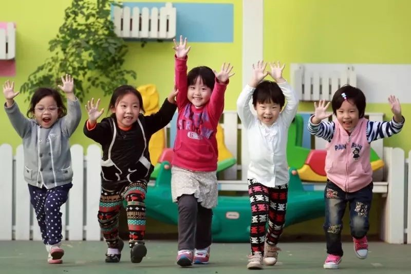
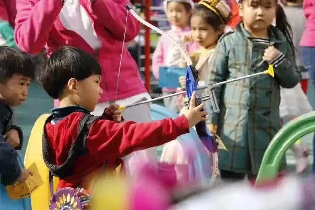
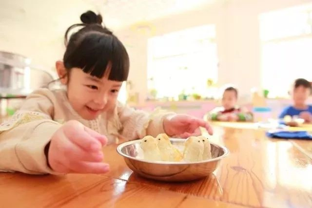

三年内至少新增6000幼儿学位，在东城，咱娃儿的学前教育靠谱！
来源：北京东城
学前教育行动计划
日前，《东城区第三期学前教育行动计划（2018—2020年）》公布，未来三年，东城将通过扩大教育部门办园规模、鼓励单位自办园、扶持普惠性民办园等措施，至少新增6000个学前教育学位，确保到2020年，常住户籍适龄幼儿入园率达到85%以上，普惠性幼儿园覆盖率达到80%以上，彻底解决无证办园问题。
过去6年已增7157个学位
2014年，“单独二孩”政策实施；2015年，“全面二孩”政策公布；2016年，“全面二孩”遇到“猴宝宝”，新生儿出生数量猛增。据市卫计委统计，2016年，北京新生儿达到28万人，比2015年增加了7万人。今年，“二宝”已至入园年龄，未来三年，学前学位需求量将连续增长。依据全市第三期“学前教育行动计划”，从今年到2020年，本市将新增17万个学前教育学位，全市适龄儿童入园率将达到85%以上，普惠性幼儿园覆盖率达到80%以上。今年本市将新增3万幼儿园学位。
过去6年，通过实施前两期“行动计划”，东城区已增加学前教育学位7157个，在园幼儿达到16720人。但目前东城区学前学位供需矛盾依然突出，三年学位总缺口超6000个。未来三年，东城区将加大公办园建设力度，大力扶持普惠性民办园，扩大学位供给，确保到2020年，常住户籍适龄幼儿入园率达到85%以上，普惠性幼儿园覆盖率达到80%以上，彻底解决无证办园问题。
继续扩大教育部门办园规模
东城将盘点教育用地，深度整合职成和小学教育资源，将部分土地资源腾出或置换用于学前教育；在学位紧张地区，探索将幼儿园大班转移到邻近的校外教育机构，实现空间和人力资源共享；统筹幼儿园已有的资源，支持、鼓励幼儿园把多功能教室、辅助用房等改扩建成幼儿活动室，扩班扩招；继续探索小班半日、中大班全日的办园模式，优化学位资源。

东城区教委副主任徐建秋介绍，东城区有教育集团在内部尝试幼小衔接，以共享教室、运动场地等资源。比如，东城区第二幼儿园四个大班迁入广渠门中学教育集团内的花市小学，幼儿园与学校共享教育资源。基于之前的试点经验，今年提出，如果部分地区入园压力大，短期没有合适的资源匹配，幼儿园可将大班转移到邻近的校外教育机构，共享资源。
缺口大街道至少新增1所普惠幼儿园
在落实市级财政对单位自办园的补贴政策基础上，东城还将设立区级专项扶持补助资金，鼓励单位自办园，释放学位，提高招收东城户籍幼儿的比例；鼓励机关、部门、企事业单位恢复或新开办幼儿园，供需矛盾突出的街道要通过自办或委托等方式至少各新增1所普惠性幼儿园。
东城还将通过生均定额补助、扩大办园规模租金补助、一次性扩学位补助、派驻教师等举措，支持社会力量办普惠园。东城区将严格执行新建居住区幼儿园配建标准，加快对已建成居住区配套幼儿园的清理和接收，将其办成公办园或普惠性民办园，并持续开展无证园分类治理。
学前教育扶持经费两亿元
东城区财政局相关负责人透露，东城区将设立两亿元专项经费用于扶持学前教育发展，设立学前教育生均定额补助、扩大办园规模租金补助和一次性扩学位补助以及接收本区户籍幼儿定额补助等补助项目。
东城区还将实施人才储备计划，在市级示范园中培养储备师资，为新增幼儿园提供骨干力量；发挥区内中职学校学前教育专业优势，探索与高校联合实施“3+2”贯通培养模式，为东城区定制培养幼教人才；建立东城区幼儿教师人力资源储备库，拓宽幼儿教师引入渠道，通过政府购买服务等多种方式补充师资。